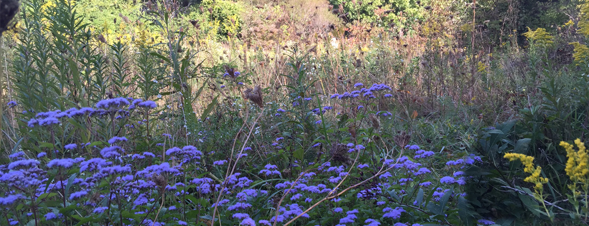

Planning
Wolf Run Watershed Council

Membership
Join Friends of Wolf Run

Restoration
Innovative Solutions

Restoration
Allendale Greenway Project
Restoration
Stream Buffer Restoration
Monitoring
Monitoring Water Quality